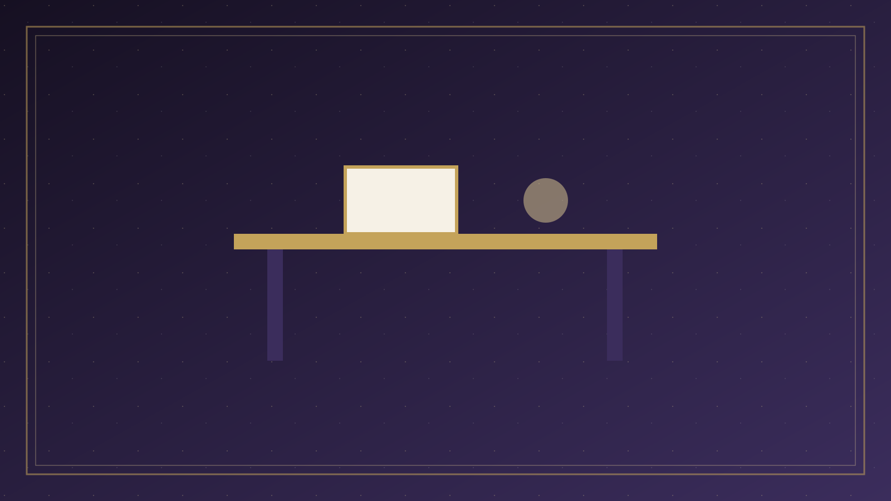

分題 08 / 08
思考與結語
互動思考
問題 1：根據立場，救恩的基礎是什麼？
人的努力和選擇
神的主動恩典工作，人需要真實回應
神完全被動，等待人先尋求
正確答案：救恩的基礎是神的主動恩典工作。神主動呼召、光照、感動人，並賜下信心。同時，人需要真實地回應、相信和接受。這是神人合作的關係。
問題 2：人的回應在救恩中扮演什麼角色？
完全被動，只是接受
真實且必要的回應，但回應的能力來自神
完全主動，先於神的工作
正確答案：人的回應是真實且必要的。雖然回應的能力和機會來自神，但人的相信、接受、悔改是真實的選擇。人可以拒絕神的呼召，這會帶來後果。
問題 3：腓立比書2:12-13如何表達神人合作的關係？
人完全依靠自己努力
神完全控制，人無需努力
人需要努力回應，但這努力是神在心裡運行的結果
正確答案：這段經文完美表達了神人合作的平衡：人需要「恐懼戰兢，做成得救的工夫」，但同時「立志行事都是神在心裡運行」。這表明人的努力和神的運行是同時進行的。
結語
神人合作論幫助我們理解救恩的奧秘：救恩完全是神的恩典，但需要人真實的回應。這種理解既讓我們保持謙卑（因為救恩是恩典），也讓我們保持責任感（因為需要回應）。我們不試圖完全解決這個奧秘，而是承認兩者都是聖經的教導，並在實踐中平衡地應用這個真理。
重要的是，我們不讓這個議題成為分裂的原因，而是讓它成為我們更深入認識神、更熱心傳福音、更謙卑服事的動力。讓我們在神的主權中得確據，在人的責任中得激勵，在神人合作的奧秘中得智慧。
「這樣看來，我親愛的弟兄，你們既是常順服的，不但我在你們那裡，就是我如今不在你們那裡，更是順服的，就當恐懼戰兢，做成你們得救的工夫。因為你們立志行事都是神在你們心裡運行，為要成就他的美意。」
— 腓立比書 2:12-13